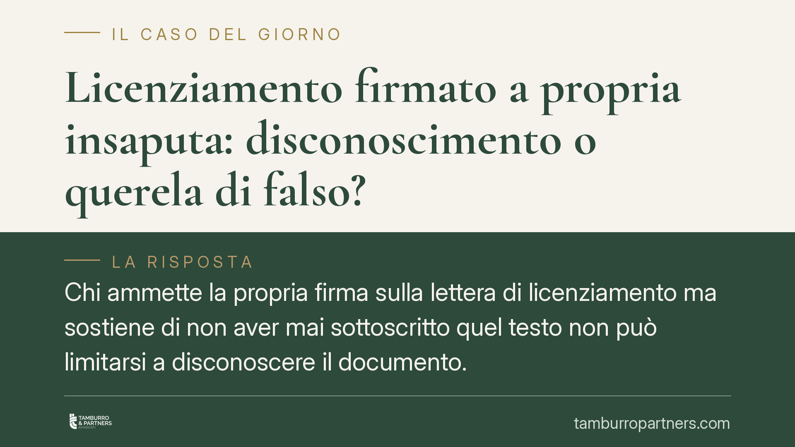

Licenziamento firmato a propria insaputa: disconoscimento o querela di falso?
Chi ammette la propria firma sulla lettera di licenziamento ma sostiene di non aver mai sottoscritto quel testo non può limitarsi a disconoscere il documento. Secondo un orientamento consolidato della Cassazione, in questi casi l'unico strumento è la querela di falso. Una distinzione tecnica che pesa sull'esito della causa e va valutata prima di impugnare.

Il caso e il principio
Un lavoratore riconosce come propria la firma apposta in calce alla lettera di licenziamento, ma afferma che il contenuto dell'atto è stato alterato o che non corrisponde a quanto effettivamente sottoscritto. La domanda è: basta disconoscere il documento, oppure occorre proporre querela di falso?
La Corte di Cassazione ha chiarito che i due strumenti rispondono a esigenze diverse e non sono intercambiabili. Il disconoscimento serve a negare la paternità della sottoscrizione; la querela di falso serve a contestare il contenuto di un atto la cui firma è stata riconosciuta.
> *Nota di verifica: il riferimento a una specifica ordinanza del 2026 non è allo stato confermabile. Il principio esposto corrisponde comunque all'orientamento consolidato della giurisprudenza di legittimità e alla disciplina codicistica.*
Inquadramento normativo
Il punto di partenza è l'art. 2702 del codice civile: la scrittura privata fa piena prova, fino a querela di falso, della provenienza delle dichiarazioni da chi l'ha sottoscritta, quando la sottoscrizione è riconosciuta o legalmente considerata come riconosciuta. In altre parole, una volta che la firma è ammessa, il documento acquista un'efficacia probatoria rafforzata.
Da qui discendono due binari processuali distinti, disciplinati dal codice di procedura civile.
Il primo è il disconoscimento della scrittura privata (artt. 214 ss. c.p.c.): la parte contro cui il documento è prodotto nega formalmente la propria firma o quella del suo autore. Se la firma è disconosciuta, chi ha prodotto il documento deve chiederne la verificazione (art. 216 c.p.c.), ossia dimostrare in giudizio che la sottoscrizione è autentica, di regola tramite perizia grafologica.
Il secondo binario è la querela di falso (artt. 221 ss. c.p.c.). È il rimedio con cui si contesta non la firma — che si ammette — ma la genuinità del contenuto: che l'atto sia stato riempito dopo la firma, alterato o manipolato. La querela di falso ha un procedimento più rigoroso, può coinvolgere il pubblico ministero e comporta un onere probatorio a carico di chi la propone.
La differenza è sostanziale. Nel disconoscimento l'onere di provare l'autenticità ricade sulla controparte; nella querela di falso l'onere di dimostrare la falsità ricade su chi la solleva.
Implicazioni pratiche
Per il lavoratore. Se la firma sulla lettera è effettivamente la sua, ammettere la firma e limitarsi a dire "ma io non ho firmato questo" non basta. Il semplice disconoscimento è destinato all'inefficacia, perché presuppone la negazione della sottoscrizione, non la contestazione del testo. Per attaccare il contenuto occorre la querela di falso, con tutti i suoi oneri. La scelta dello strumento sbagliato può precludere la contestazione nel merito.
Per il datore di lavoro. Una lettera di licenziamento con firma riconosciuta gode di una solida tenuta probatoria. Il datore che conserva correttamente la documentazione sottoscritta si trova in posizione processuale favorevole: la controparte, per smontare l'atto, dovrà affrontare la procedura di falso, più complessa e gravosa.
Resta ferma la diversa ipotesi della firma apocrifa: quando il lavoratore sostiene che la firma non è la sua, lo strumento corretto torna a essere il disconoscimento, con onere di verificazione a carico del datore.
Cosa fare in concreto
- Verificare la firma prima di ogni mossa processuale. Stabilire con certezza se la sottoscrizione è autentica o apocrifa, perché da questo dipende lo strumento da utilizzare.
- Distinguere l'oggetto della contestazione. Si contesta la firma o il contenuto dell'atto? La risposta determina se procedere con disconoscimento o querela di falso.
- Valutare la scelta prima dell'impugnazione. La selezione tra disconoscimento e querela di falso va definita all'inizio: non è rimediabile a giudizio avviato se si imbocca la strada errata.
- Conservare la documentazione integrale. Entrambe le parti hanno interesse a custodire originali, copie e corrispondenza connessa alla lettera.
- Considerare l'onere probatorio. Chi propone la querela di falso deve essere consapevole che la prova della falsità è a suo carico e richiede un supporto tecnico adeguato.
Disclaimer
Contributo informativo a cura di Tamburro & Partners Avvocati - Avv. Giuseppe Tamburro. Non costituisce parere legale.
Ogni storia di lavoro ha i suoi tempi.
Se gestisci HR e vuoi un confronto su contenzioso, ispezioni o licenziamenti, scrivi allo studio. Ti rispondiamo entro un giorno lavorativo.